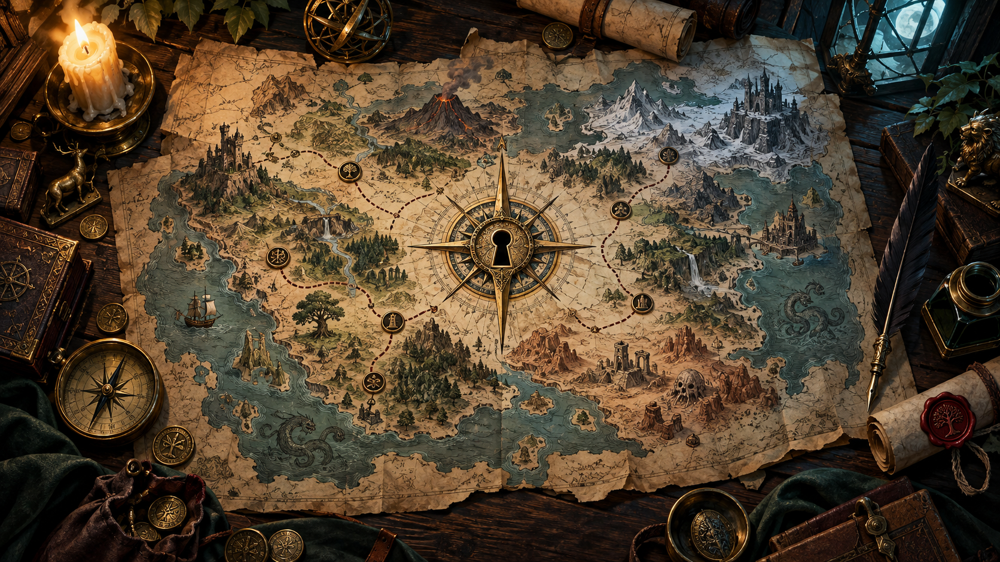

Every story has a way in
Adapted by Hymlock Groves
Based on Parchmap by Roy Lazarovich
No inventory response recorded.
0 items
Drag an item onto an open container to put it in, or onto Yourself to take it out. Right-click or long-press for actions.
No story is loaded.
Choose a story